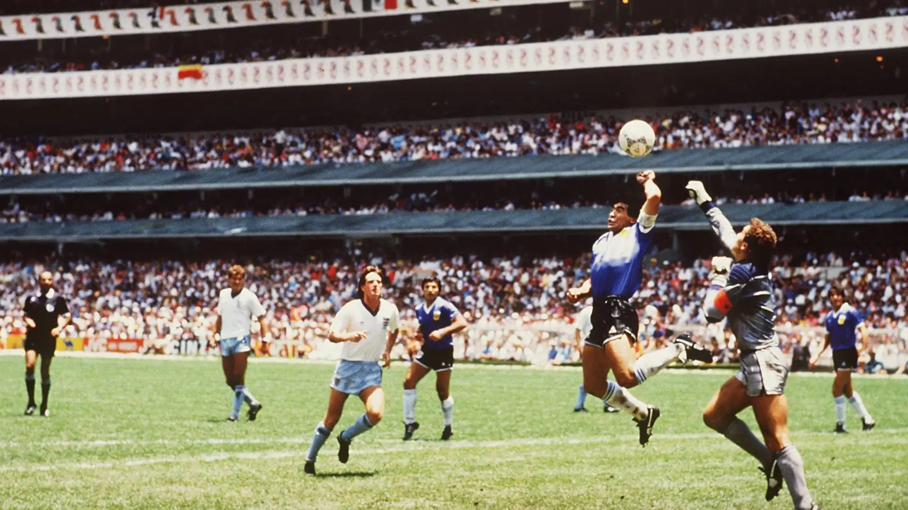

Memorable Moments

1950 World Cup Maracanazo: Uruguay stunned Brazil 2-1 in the Maracanã Stadium, Rio de Janeiro.

Diego Maradona's "Hand of God" Goal (1986): Maradona scored a controversial goal using his hand against England.